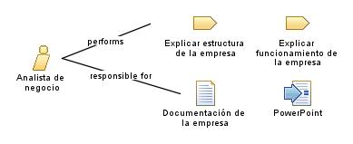

| Role: Analista de negocio |
 |
|
Relationships
 |
||
| Primary Performs | ||
|---|---|---|
| Modifies |
|
|
Main Description
El analista realiza tareas como:
|
Staffing
| Skills | El analista de negocio tiene algunas habilidades como:
|
|---|---|
| Assignment Approaches | El analista de negocio tiene diferentes enfoques de asignación tales como:
|
| Synonyms |
|
Key Considerations
El analista:
|